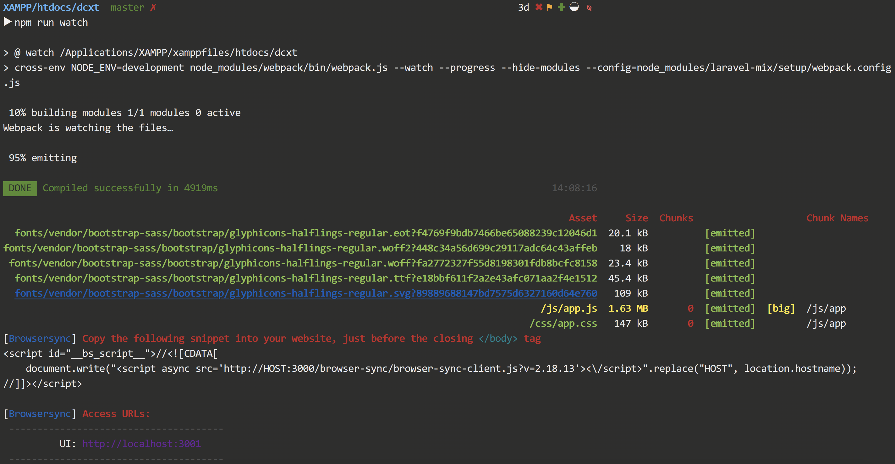
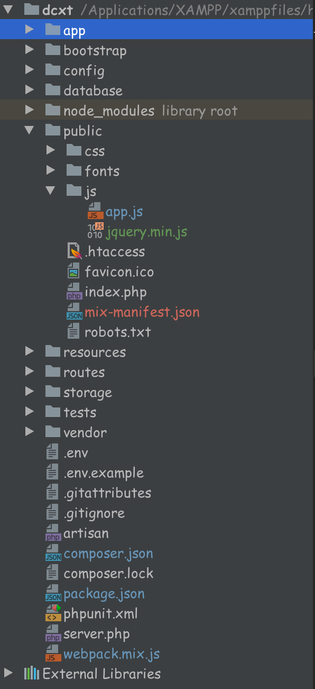

laravel5.5 使用注意点
laravel 5.5
1. blade模板使用 @section
laravel自带有blade模板引擎，需在后缀前面加上 .blade
先创建一个布局视图 app.blade.php,
1 | <!-- 文件保存于 resources/views/layouts/app.blade.php --> |
再新建一个模板 继承该布局
1 | <!-- 文件保存于 resources/views/layouts/index.blade.php --> |
这里有个注意点，比如header 只是想用模板的，不需要在进行定制，就直接写一个
@section('header')这个就行了，不需要额外加别 @ 的进行闭合。如果需要在里面进行个性化定制，则需要加上@endsection进行闭合
1 | @section('header') |
这样写会把之前的全部替换掉，如果是想在原来的基础上添加内容，则加上
@parent
1 | @section('header') |
2. 配置 BrowserSync
Browsersync能让浏览器实时、快速响应您的文件更改（html、js、css、sass、less等）并自动刷新页面。更重要的是 Browsersync可以同时在PC、平板、手机等设备下进项调试。
因此为了更快更方便的开发网页，我们可以用上 BrowserSync，laravel框架也有集成这个工具。
1. 先进入laravel项目根目录 安装 browser-sync
1 | npm install --save-dev browser-sync browser-sync-webpack-plugin |
2. 配置 webpack.mix.js
1 | const BrowserSyncPlugin = require('browser-sync-webpack-plugin') |
3. 运行
1 | npm run watch |
4. 修改 blade

Terminal有提示在 页面中添加如下代码
1 | <script id="__bs_script__">//<![CDATA[ |
3. 解决 跨站请求伪造 (CSRF)
在获取菜单列表的时候，ajax提交post请求，突然返回个419的错误，之前从没有碰到过，查了下，原来是laravel的 CSRF的原因。
CSRF（Cross-site request forgery跨站请求伪造，也被称为“One Click Attack”或者Session Riding，通常缩写为CSRF或者XSRF，是一种对网站的恶意利用。尽管听起来像跨站脚本（XSS），但它与XSS非常不同，并且攻击方式几乎相左。XSS利用站点内的信任用户，而CSRF则通过伪装来自受信任用户的请求来利用受信任的网站。与XSS攻击相比，CSRF攻击往往不大流行（因此对其进行防范的资源也相当稀少）和难以防范，所以被认为比XSS更具危险性。
Laravel 会自动为每个活跃用户的会话生成一个 CSRF「令牌」。该令牌用于验证经过身份验证的用户是否是向应用程序发出请求的用户。
任何情况下当你在应用程序中定义 HTML 表单时，都应该在表单中包含一个隐藏的 CSRF 令牌字段，以便 CSRF 保护中间件可以验证该请求。可以使用辅助函数 csrf_field 来生成令牌字段：
1. 准备提交的表单
使用 csrf_field() 来生成令牌字段，提交的时候一并提交上去。
1 | <form method="POST" action="/profile"> |
他会生成如下的标签
1 | <input type="hidden" name="_token" value="r1rvi8vZSHorERVAERKdm9DcyrWV8U1G9TIR3HH4"> |
如果是ajax提交的，有一种做法，在页面上某个角落加入 {{ csrf_field() }}，然后获取input里的value值，再传上去。
1 | var token = $('input[name=_token]').val(); |
2. 把url加入CSRF的白名单
你可以把这类路由放到 routes/web.php 外
或者 你也可以通过将这类 URI 添加到 VerifyCsrfToken 中间件中的 $except 属性来排除对这类路由的 CSRF 保护
1 | // app/Http/Controller/Middleware/VerifyCsrfToken.php |
url路由写法
1 | // routes/web.php |
blade添加静态资源和url
引入静态资源 asset()
静态资源就放在 public/ 下
1 | <script src="{{asset('js/jquery.min.js')}}"></script> |

请求的url地址 url()
在 {{}} 里使用 url()方法写上 routes 里写的路由就行了，